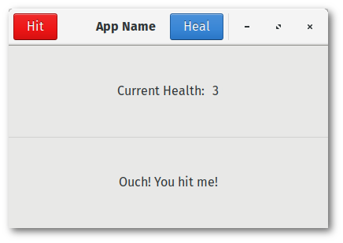

Button Boxer

This section will give a look into how to structure your UI with boxes, manipulate labels, and programming clicked buttons with closures. By the end, you will also have an understanding of how to add children to a header bar, add style classes to buttons, manage application state via Arc'd atomic components, and align widgets within a container.
Recall that each GTK object that you obtain from the gtk crates are wrapped so that you need not worry about Rust borrowing rules. GTK objects are reference-counted, so when you need to share a GTK object across multiple closures, you can do so by simply cloning a new reference.
Prerequisites
It is generally assumed that you have an understanding of atomics and atomic reference counters (Arc) before continuing with this tutorial. In order to share state across multiple programmable closures, or even multiple threads, it is vital to take advantage of these concepts. See the std::sync and std::sync::atomic modules to learn about them beforehand. You can also check out this paper on lockless concurrency.